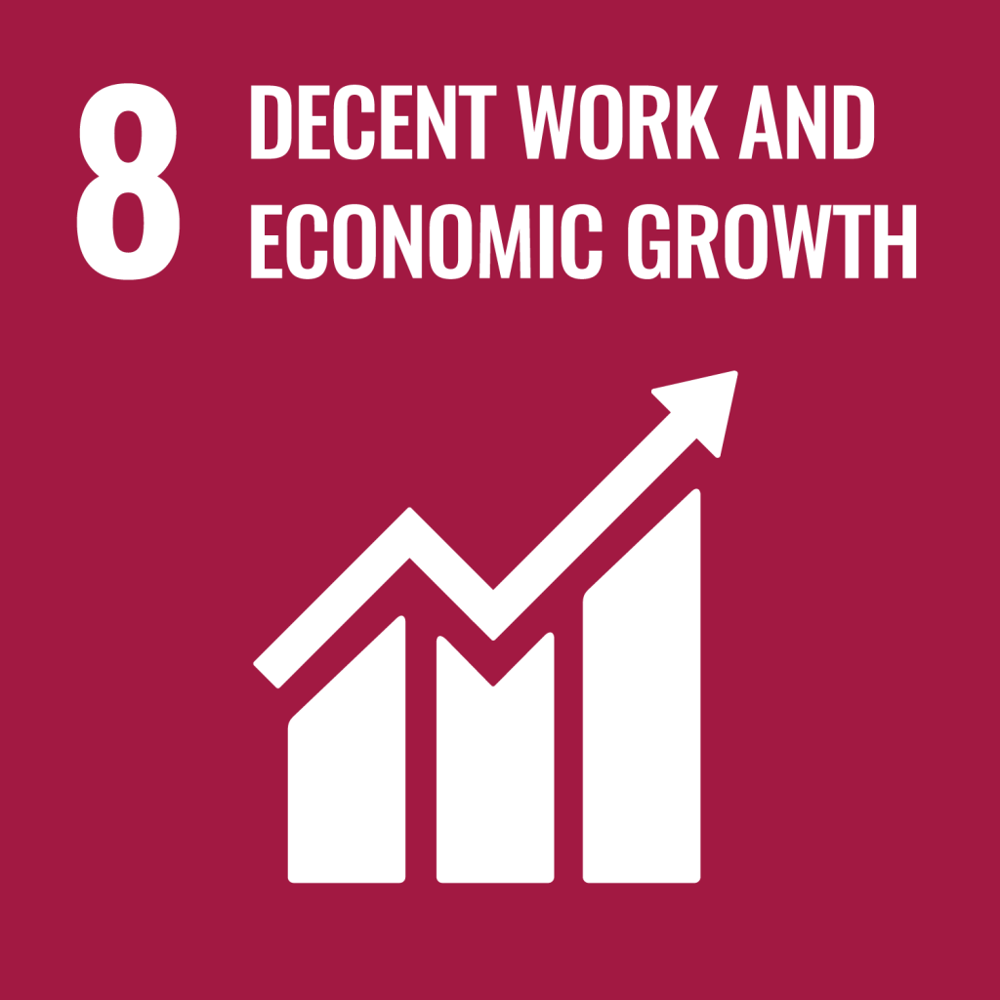

Curriculum Vitae · Sample · Scratch Match
Beatriz Velez
Returning to Work · Bookkeeping & Admin
30+ years in finance and admin. Seeking a part-time role under the city's senior employment program.
Summary
Recently retired bookkeeper with three decades of experience in family-business and SME finance. Joining the Cebu City Senior Citizens Employment 2026 program. Looking for two-to-three day-a-week work in light bookkeeping, records, or front-desk admin. Patient with clients, allergic to clutter.
Experience
Senior Bookkeeper
1998 – 2025
Velez & Sons Trading · Cebu City
- Owned the books for a family hardware-supply business through 27 years of growth.
- Trained two of her grandchildren on the basics of small-business accounting.
- Kept paper and digital ledgers in parallel through three software migrations.
Office Clerk
1989 – 1998
Cebu Diocesan Schools · Cebu City
- Handled enrolment records and payment reconciliation for ~600 students per year.
Education
Cebu Institute of Technology
1985 – 1989
BS Commerce, major in Accounting
Sample CV · for Scratch Match prototype demo · Group Sigma · CIS 2205
